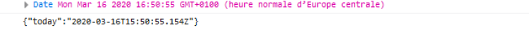

JavaScript embarque nativement un objet permettant la gestion du format JSON. Cet objet propose deux méthodes :
La méthode stringify() de l'objet JSON de JavaScript prend en paramètre un type JavaScript, et le sérialise en une chaîne de caractères au format JSON.
See the Pen Untitled by OpenSpirit (@OpenSpirit) on CodePen.
L’exécution du code précédent affiche la chaîne de caractères suivante dans la console du navigateur : {"stadium":{"id":18,"label":"Stade de France","fields":[{"id":2,"label":"Terrain de foot","area":200},{"id":5,"label":"Terrain de rugby","area":null}]}}
Le format JSON n'acceptant pas de format date à proprement parler, les données au format date de JavaScript sont traduites en chaîne de caractères.
See the Pen Untitled by OpenSpirit (@OpenSpirit) on CodePen.
Le résultat de l’exécution du code précédent montre que l'objet Date de JavaScript a été traduit en chaîne de caractères lors de sa transcription en JSON.
À travers l'exemple précédent, on constate que la fonction JSON.stringify() de JavaScript permet d'obtenir une représentation structurée au format JSON des données.
L'objet JSON de JavaScript expose une fonction permettant de désérialiser une chaîne de caractères respectant un format JSON valide en un type JavaScript classique. Cela signifie que les données peuvent être récupérées en respectant la notation pointée de JavaScript. Cette fonction est parse().
See the Pen Untitled by OpenSpirit (@OpenSpirit) on CodePen.
L'exécution du code précédent affiche la valeur de l'attribut id de l'objet contenu dans l'attribut stadium de l'objet obtenu, c'est-à-dire 18.
La bonne exécution de l'instruction JSON.parse() est dépendante de la validité du format JSON de la chaîne de caractères passée en paramètre. En effet, en cas d'invalidité de la structure de données, une exception du type SyntaxError est levée. C'est pourquoi l'utilisation de JSON.parse() se fait au sein d'un bloc try/catch afin de permettre une gestion de l'erreur.
See the Pen Untitled by OpenSpirit (@OpenSpirit) on CodePen.
Le code précédent génère l'erreur suivante :
See the Pen Untitled by OpenSpirit (@OpenSpirit) on CodePen.
Le langage JavaScript embarque nativement un objet JSON qui expose les fonctions JSON.stringify(), pour sérialiser un type JavaScript en une chaîne de caractères respectant le format JSON
Et JSON.parse()pour désérialiser une chaîne de caractères au format JSON valide en un type JavaScript